The group theory is heavily used in all options related to vibrations which are described in this Section. Let be a symmetry group of the system of interest. Three cases are pressently distinguished here:
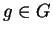
are used, Section 2.6.8.5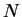
times, the group of internal translations will contain elements including the zero translation (as unity); note that point group operations are not considered here (if they were, it would have been nearly a real space group then!); however, using this option it is possible to assign the phonons to the
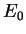
is the total energy at zero displacements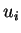
. Here the index refers to all degrees of freedom of the atoms in the cell (their Cartesian coordinates). The matrices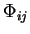
,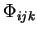
, etc. characterise the system response to the atomic displacements. Note that in spite of the fact that summation over , , etc. is performed within the cell, the method that follows gives exact phonons (see [1,2,3]) in theThe matrix
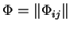
is the force constant matrix (FCM) sought for. If we know it, the dynamical matrix can be calculated as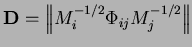
, where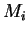
is the mass associated with . To find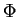
, we use the method of finite displacements: atoms in the unit cell are displaced by small amounts , the forces on all atoms are calculated, and these are used to obtain elements of .Three methods are presently implemented that require various amount of calculation. In the first method, only one displacement per degree of freedom (e.g. atomic displacement alonf some Cartesian axis) is used. Then, ignoring all anharmonic terms in Eq. (2.2) and assuming that all atoms are in mechanical equilibrium (
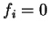
for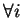
), one obtains for the forces on atoms for a single displacement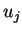
:
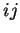
element of the FCM, one can displace the degree of freedom and calculate the force on the degree ; alternatively, since the FCM is symmetric, one can displace and calculate the force on . The first method requires very small displacements since anharmonic terms are not included.In the second method one uses two displacements, and
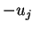
for each degree of freedom. In this case the system may not be at equilibrium (i.e.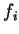
may be non-zero), and one can keep all odd terms in the energy expression (2.2). Denoting by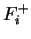
and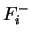
the forces on due to both displacements of , one obtains: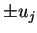
and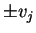
. In this case the elements can also be obtained, we do not give the final expression.The method described above is referred to in the code as the ``Force method''. There is also another method implemented, called the ``Energy method'' that requires many more DFT runs. Historically, this method was implemented first in tetr and still remains in the code; we shall not consider it here (see README file for details on this method).